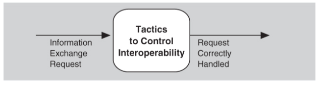

INTEROPERABILIDAD
La interoperabilidad se refiere al grado en que dos o más sistemas pueden intercambiar información útil a través de interfaces en un contexto particular. La definición incluye no solo tener la capacidad de intercambiar datos (interoperabilidad sintáctica) sino también la capacidad de interpretar correctamente los datos que se intercambian (interoperabilidad semántica).
La interoperabilidad no es una proposición de sí o no, sino que tiene matices de significado. Existen
| Fuente: | Persona o sistema que inicia el estímulo | |
|---|---|---|
| Estímulo: | Evento que requiere que responda el sistema | |
| Artecto: | Parte del sistema o el sistema completo | |
| Respuesta: | Acción vicible externamente | |
| Medio Ambiente: | Los sistemas que desean interoperar se descubren en tiempo de ejecución o se conocen antes del tiempo de ejecución. | |
| medida de respuesta: | Croterio de exito para el escenario | |
| Entorno: | circunstacias operativas | |
Las tácticas de disponibilidad se pueden categorizar para abordar una de tres categorías: detección de fallas, recuperación de fallas y prevención de fallas. La


OBJETIVO
Responsable del funcionamiento y la transmisión de datos y su intercambio con otros sistemas externos. Un sistema bien diseñado facilita la integración con sistemas de terceros. Para mejorar la interoperabilidad, puede utilizar interfaces externas bien diseñadas, sistemas de estandarización, etc.

DISEÑOS
Asignacion de responsabilidades
Modelo de coordinación
Modelo de datos
Mapeo entre elemento arquitectual
Gestión de recursos
Elección de tecnología

GESTIÓN DE INTERFACES
• Organizar . Orchestrate es una táctica que utiliza un mecanismo de control para coordinar, gestionar y secuenciar la invocación de servicios particulares (que podrían ignorarse entre sí).
• Interfaz a medida . La interfaz Tailor es una táctica que agrega o elimina capacidades a una interfaz. Se pueden agregar capacidades como traducción, adición de búferes o suavizado de datos. Las capacidades también pueden ser eliminadas.